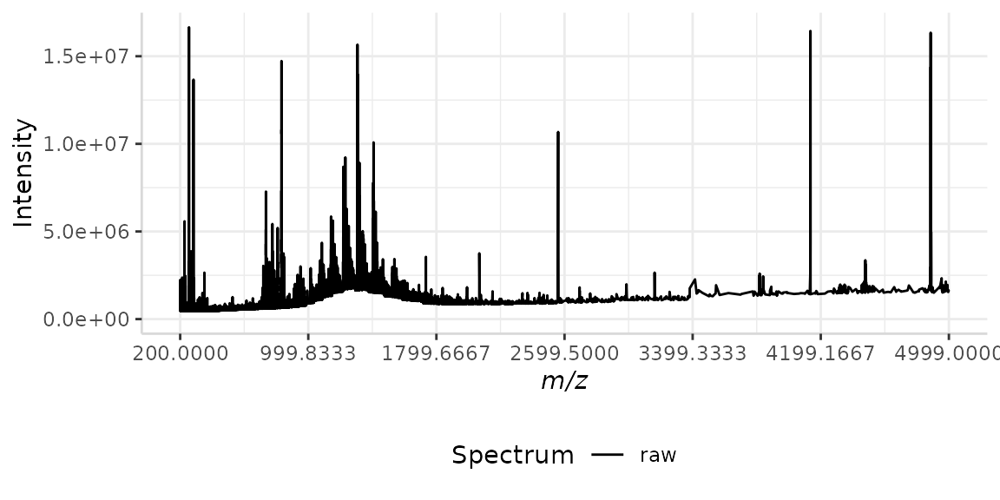
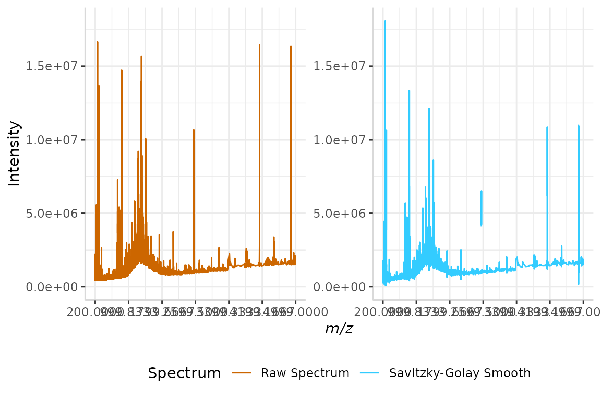
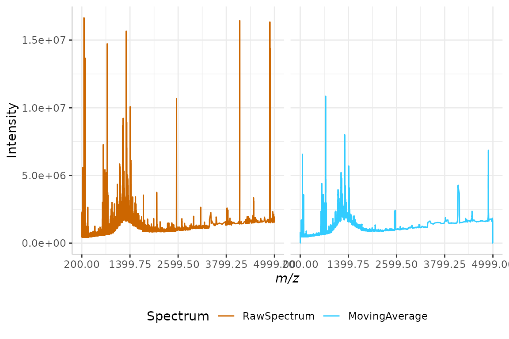
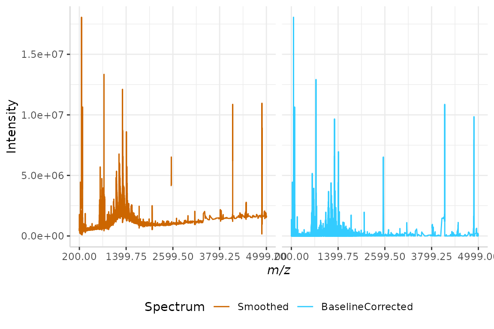
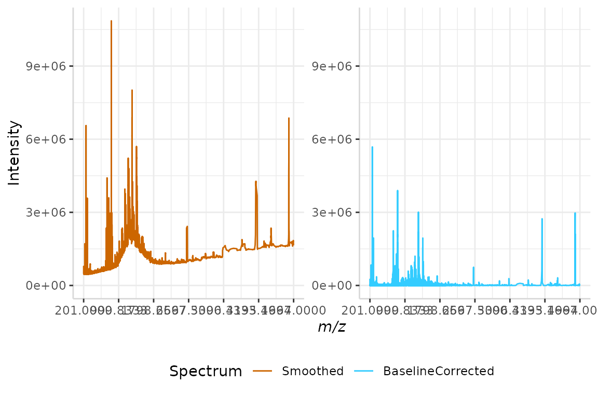
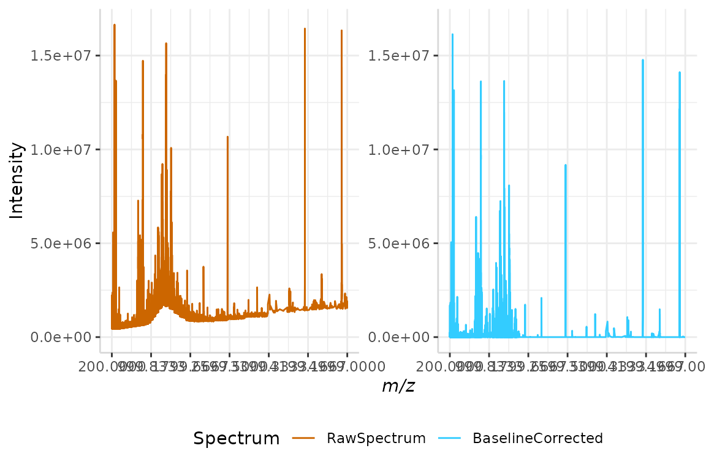
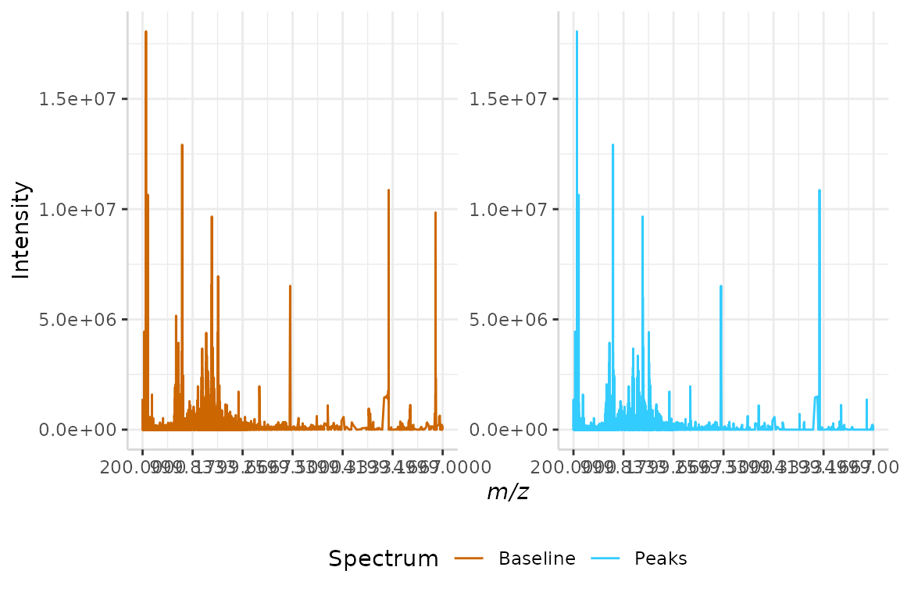
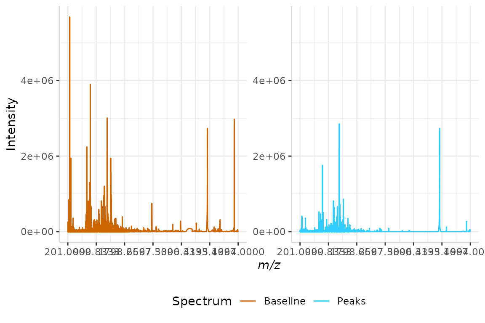
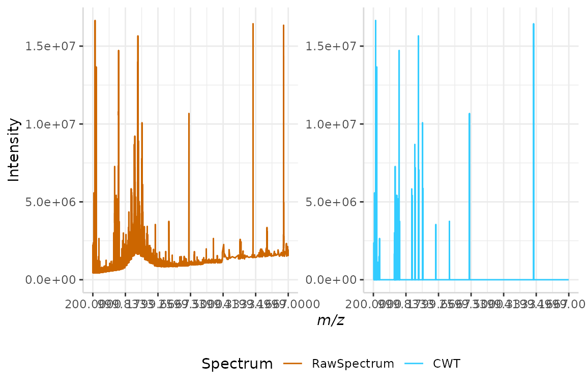

subMALDIprocessing.Rmd1 Forensic Science Program, Trent University, Peterborough, ON, Canada
2 Faculty of Science, Applied Bioscience, Ontario Tech University, Oshawa, ON, Canada
3 Faculty of Science, Mathematics, Trent University, Peterborough, ON, Canada
In this vignette we demonstrate a pre-processing workflow for smoothing, baseline correction, and peak detection of raw, irregularly-spaced mass spectrometry data using subMALDI. This package is freely available from GitHub and was created using MALDI FT-ICR mass spectrometry data.
It is recommended that users first read through the “subMALDI Workflow” vignette before proceeding with pre-processing functions. This will assist users in understanding the basic functions included in subMALDI, including import, plotting, and mapping functions for comparison of multiple spectra.
We’ll begin this vignette by installing the package and loading a sample data set included with the package, called "bsline.rda".
library("subMALDI")
#> Loading required package: dplyr
#>
#> Attaching package: 'dplyr'
#> The following objects are masked from 'package:stats':
#>
#> filter, lag
#> The following objects are masked from 'package:base':
#>
#> intersect, setdiff, setequal, union
#> Loading required package: tidyr
#> Loading required package: ggplot2
#> Loading required package: ggpmisc
#>
#> Attaching package: 'ggpmisc'
#> The following object is masked from 'package:ggplot2':
#>
#> annotate
#> Loading required package: reshape2
#>
#> Attaching package: 'reshape2'
#> The following object is masked from 'package:tidyr':
#>
#> smiths
#> Loading required package: RColorBrewer
#> Warning: replacing previous import 'ggplot2::annotate' by 'ggpmisc::annotate'
#> when loading 'subMALDI'
#> Warning: replacing previous import 'dplyr::filter' by 'signal::filter' when
#> loading 'subMALDI'
data("bsline")Although most modern-day high resolution mass spectrometry instruments come with their own spectral processing software which are capable of automatic baseline correction, this software can fail, producing a spectrum with an uneven baseline.
Our data set bsline is an example of this scenario. A plot of the raw spectrum is shown below.
plotSpectra(dat = bsline, mass_dat = "mass", spectra_cols = "raw",
colours = "black", min_mz = 200, max_mz = 5000, x_ticks = 7)
Observing this plot, we can clearly see the baseline of the spectrum is increasing as the x-axis increases, with the exception of a nearly Gaussian-shaped curve from the m/z range 700 to 1700. Before we can extract meaningful data from this raw spectrum, this irregular baseline must be corrected.
We will work through the pre-processing and baseline correction below, demonstrating several different methods for each processing step.
As the sensitivity of high-resolution mass spectrometry instruments increases, so does the amount of detectable noise. This produces spectra which appear thicker around the baseline than at high intensity peaks, without proper spectral processing. We can see this phenomenon in our sample data set bsline from the m/z range 200 to 1700. Here, the baseline of the spectrum is very thick relative to that at higher m/z values and high intensity peaks.
In order to minimize the noise in our spectrum and create a more uniform signal throughout the analyzed m/z range, we will use the subMALDI function smoothSpectrum. This function offers two different filters for spectral smoothing: the Savitzky-Golay and moving average filters.
The Savitzy-Golay filter is a least-squares smoothing method [1]. It performs a least squares fit of a small set of consecutive data points to a polynomial and takes the central point of the fitted polynomial curve as the output [1,2].
The output of a Savitzky-Golay smoothing filter is given by the following equation [1,2]: \(y[n] = \frac{\sum{A*x[n-i]}}{\sum{A}}\)
Where n denotes signal index and k indicates filter width [1]. A controls the polynomial order [1,2].
Use of subMALDI’s Savitzy-Golay filter is demonstrated below. When using smoothSpectrum(method = "sgolay", the following arguments are required:
p = Filter ordern = Filter length, must be oddm = Return the m-th derivative of the filter coefficients (Default = 0)ts = Time scaling factor (Default = 1)
sgolay <- smoothSpectrum(dat = bsline, mass_dat = "mass", intensity_dat = "raw",
method = "sgolay", p = 4, n = 7, m = 0, ts = 1)We’ll now compare our smoothed version of bsline to the raw spectrum by merging the intensity data into a single data frame.
test <- data.frame(bsline$mass, bsline$raw, sgolay$sg)
names(test) <- c("mass", "Raw Spectrum", "Savitzky-Golay Smooth")
plotSpectra(dat = test, mass_dat = "mass", spectra_cols = c("Raw Spectrum", "Savitzky-Golay Smooth"), min_mz = 200, max_mz = 5000,
x_ticks = 7)
The noise of the raw spectrum has now been reduced.
The output of a moving average smoothing filter is denoted by the following equation [1]: \(y[n] = \frac{1}{2k+1}*\sum{x[n-i]}\)
Again, k denotes filter width and n indicates signal index. The larger the filter width, the more intense the smoothing filter [1].
We will use the "mov_avg" smoothing filter on our sample data set below. When using smoothSpectrum(method = "sgolay", the n argument, window size/filter width, is required. Since bsline is only extraneously noisy in the first portion of the spectrum, the value of n should not be too large (< 10), as this will risk distorting the shape of peaks at higher m/z values. We will use n = 7 in this example.
mov_avg <- smoothSpectrum(dat = bsline, mass_dat = bsline$mass, intensity_dat = bsline$raw,
method = "mov_avg", n = 7)We’ll now compare our smoothed version of bsline to the raw spectrum by mapping the raw and smoothed intensities to a spectral data frame called test. The code that follows is explained in depth in the vignette “subMALDI Workflow”.
Once our raw and smoothed spectra have been mapped to the data frame, we can remove m/z rows that do not correspond to any intensities in either spectra with rmveEmpty().
test <- createSpecDF(min_mz = 200, max_mz = 5000)
test <- select(test, full_mz)
test <- transform(test, "RawSpectrum" = 0, "MovingAverage" = 0)
test <- mapSpectrum(bsline, massCol = "mass", intenseCol = "raw",
colName = "RawSpectrum", spec_df = test)
test <- mapSpectrum(mov_avg, massCol = "mass", intenseCol = "mov_avg",
colName = "MovingAverage", spec_df = test)
test <- rmveEmpty(test)The raw and smoothed spectra are plotted below.
plotSpectra(dat = test, mass_dat = "full_mz", spectra_cols = c("RawSpectrum", "MovingAverage"), min_mz = 200, max_mz = 5000,
x_ticks = 5, intensity_scale = "fixed")
The noise in the smoothed spectrum is now noticeably reduced relative to the raw spectrum.
Baseline correction often consists of two steps. First, estimating the baseline of the spectrum, and second, subtracting the baseline from the signal [1]. subMALDI offers three methods for baseline estimation: local monotone minimum, linear interpolation, and LOESS curve fitting.
Depending on the level of noise in your data, you may choose to skip spectral smoothing and proceed to baseline correction and peak detection. subMALDI’s baseline correction functions are compatible with both raw and smoothed spectra.
In the examples that follow, we will correct the baseline of our smoothed spectra from section 2, sgolay and mov_avg, and the baseline of our raw spectrum, bsline, using baselineCorr().
The monotone minimum method computes the difference in intensity between adjacent peaks to determine the slope of each point [1]. The baseline is then estimated as follows, moving from the leftmost to rightmost point:
Each intensity value in the spectrum is then subtracted by the intensity of the nearest valley, correcting any irregularities in the baseline of the data.
Use of monotone minimum method of baseline correction is demonstrated below, on the Savitzky-Golay smoothed spectrum sgolay from section 2.1.
mono_min <- baselineCorr(dat = sgolay, mass_dat = "mass",
intensity_dat = "sg", method = "monotone_min")The smoothed and baseline corrected intensities are merged into a single data frame below, so that they can be plotted for comparison.
test <- data.frame(sgolay$mass, sgolay$sg, mono_min$baseline)
names(test) <- c("mz", "Smoothed", "BaselineCorrected")
plotSpectra(dat = test, mass_dat = "mz", spectra_cols = c("Smoothed", "BaselineCorrected"), min_mz = 200, max_mz = 5000,
x_ticks = 5, intensity_scale = "fixed")
Observing the plot above, we can see that the baseline of the spectrum now runs along the x-axis, and is no longer irregular.
NOTE: Depending on the size of your data set, this function may take quite a while to run. Spectral data frames longer than 100,000 rows may take an hour to run. Methods "linear" and "loess" are capable of processing large data sets more efficiently.
Linear interpolation estimates the baseline of a spectrum by dividing it into small segments [1]. In each segment, the mean of the points is evaluated and recorded as a baseline predictor for that segment [1].
A baseline is then generated by linearly interpolating baseline predictors across all small segments [1]. In each segment, the intensity of each peak is subtracted by the intensity of the baseline predictor in that segment.
We will use this method of baseline correction on our mov_avg spectrum from section 2.2 below. When using baselineCorr(method = "linear"), the n argument, segment size, is required. To be consistent with previous examples, we will use n = 7.
linear_int <- baselineCorr(dat = mov_avg, mass_dat = "mass",
intensity_dat = "mov_avg", method = "linear", n = 7)In order to compare the smoothed and baseline-corrected spectra, we will once again merge their intensities into a single data frame. Once the data has been organized, we can plot it for comparison.
test <- data.frame(mov_avg$mass, mov_avg$mov_avg, linear_int$baseline)
names(test) <- c("mz", "Smoothed", "BaselineCorrected")
plotSpectra(dat = test, mass_dat = "mz", spectra_cols = c("Smoothed", "BaselineCorrected"), min_mz = 200, max_mz = 5000,
x_ticks = 7)
Again, we can see the baseline now falls along the x-axis and is no longer irregular.
Much like the linear interpolation method, LOESS curve fitting begins by dividing a spectrum into small segments [1]. The quantile is then evaluated in each segment [1]. The baseline is estimated as follows:
Local polynomial regression fitting is applied to the predictor points [1]. The baseline is then subtracted from the raw spectral signal.
The LOESS method of baseline correction is demonstrated below on our sample raw spectrum, bsline.
loess <- baselineCorr(dat = bsline, mass_dat = "mass",
intensity_dat = "raw", method = "loess")The raw and baseline corrected spectra are merged into a single data frame and plotted below.
test <- data.frame(bsline$mass, bsline$raw, loess$baseline)
names(test) <- c("mz", "RawSpectrum", "BaselineCorrected")
plotSpectra(dat = test, mass_dat = "mz", spectra_cols = c("RawSpectrum", "BaselineCorrected"), min_mz = 200, max_mz = 5000,
x_ticks = 7)
Once more, we see the baseline of the corrected spectrum running along the x-axis, with the irregularities of the raw spectral baseline removed.
Spectral data sets can be further processed using peak detection methods. In this step, false peak candidates are removed from a spectrum if they do not meet the criteria in the method.
subMALDI offers two methods for peak detection: signal-to-noise ratio and slopes of peaks. Examples can be found below, in sections 4.1 and 4.2.
subMALDI is also compatible with other R packages designed for processing mass spectra. To demonstrate this, we will use the continuous wavelet transform (CWT) algorithm from MassSpecWavelet [3] to baseline correct and detect peaks in subMALDI’s sample data. This is shown in section 4.3.
Each spectrum is divided into segments of size n. Noise is calculated as the median absolute deviation of points within each segment [1].
The intensity of each peak is then divided by the noise in that segment, yielding an SNR value for each peak. If the SNR value of a peak is lower than the defined SNR_thresh, the peak candidate is discarded [1].
We will perform SNR peak detection on our monotone minimum baseline corrected data set from section 3.1, monotone_min, below.
snr <- peakDet(mono_min, "mz", "baseline", method = "snr",
n = 7, SNR_thresh = 3)As performed previously, we will merge the intensity data from the baseline corrected and peak-filtered spectra. Once the data is in a single frame, we can plot the spectra for comparison.
test <- data.frame(mono_min$mz, mono_min$baseline, snr$peaks)
names(test) <- c("mz", "Baseline", "Peaks")
plotSpectra(dat = test, mass_dat = "mz", spectra_cols = c("Baseline", "Peaks"), min_mz = 200, max_mz = 5000,
x_ticks = 7)
We can see that some peaks present in the baseline corrected spectrum are not present in the peak-filtered spectrum. These peaks did not meet the SNR criteria.
This method uses the shapes of peaks to remove false peak candidates [1]. First, the left and right endpoints of each peak are identified on the baseline. Next, the slopes of each endpoint are evaluated.
If the either the left or right slope are less than a defined threshold, the peak candidate is discarded [1]. The threshold is defined as half of the local noise level, or half of the median absolute deviation in a window of size n [1].
We will demonstrate this method of peak detection below, using the linear interpolated data set generated in section 3.2, linear_int.
slopes <- peakDet(linear_int, "mz", "baseline", method = "slopes",
n = 7)The filtered peaks and baseline-corrected intensities are merged and plotted below.
test <- data.frame(linear_int$mz, linear_int$baseline, slopes$peaks)
names(test) <- c("mz", "Baseline", "Peaks")
plotSpectra(dat = test, mass_dat = "mz", spectra_cols = c("Baseline", "Peaks"), min_mz = 200, max_mz = 5000,
x_ticks = 7)
Once more, we can see the difference in peak distribution between the baseline corrected and peak-filtered spectra. Peaks that are not shown in the peak-filtered spectrum were discarded as the slopes of their endpoints failed to meet a threshold.
Several other R packages are available for processing mass spectrometry data [3-5]. While these differ from subMALDI in their capabilities and organization, several of the functions from these packages can be used with subMALDI’s data structure.
Here we will demonstrate the compatibility of subMALDI with the continuous wavelet transform (CWT) algorithm included with MassSpecWavelet. The CWT algorithm is a more sophisticated method of pre-processing which is capable of both baseline correction and peak detection in a single step [1].
The package MassSpecWavelet is loaded below.
library(MassSpecWavelet)
#> Loading required package: waveslim
#>
#> waveslim: Wavelet Method for 1/2/3D Signals (version = 1.8.2)We will begin the CWT method by selecting our scales, or scaling factors. The scale factor compresses or dilates a signal.
When the scale factor is low, the signal is compressed, resulting in a more detailed spectrum. Conversely, when the scale factor is high, the signal is elongated and the resulting spectrum is less detailed.
In the continuous wavelet transform, the scaling factor is usually a vector. This allows the algorithm to compare each spectral signal to different sized wavelets for peak identification. While a wider variety of scaling factors generally results in more identified peaks, a long scaling factor vector may significantly impact the run time of the analysis.
In the example below, our scales have been selected to ensure maximum peak identification with minimum run time.
scales <- seq(1,40, by = 1)MassSpecWavelet recognizes spectral data sets as a vector of intensity values. To match this data structure, we will grab only the intensity column of bsline and assign it to the variable y. For later use, we will also grab the m/z column from bsline and assign it to the variable x.
y <- bsline$raw
x <- bsline$massOnce our spectral data has been vectorized for use with MassSpecWavelet, we can generate our CWT coefficients using scales. This is performed using the code below.
coeff <- cwt(y, scales = scales, wavelet = "mexh")
coeff <- cbind(y,coeff)
colnames(coeff) <- c(0,scales)The next step is to identify local maxima in our coefficient matrix. This is done as follows.
localMax <- getLocalMaximumCWT(coeff) Once identified, the local maximal coefficients are used to identify ridge lines [1]. To generate each line, the local maximum coefficient is connected to its adjacent scale [1].
ridgeList <- getRidge(localMax)Ridge lines are then used to discard false peak candidates [1]. Criteria for exclusion are as follows: * If the length of the ridge line is smaller than a user-defined threshold, the peak is discarded. * If the width of a peak is not within a given range, it is discarded. [3]
We will use these lines to generate a peak index below.
majorPeakInfo <- identifyMajorPeaks(y, ridgeList, coeff,
scales = as.numeric(colnames(coeff)),
SNR.Th = 3)
peakIndex <- majorPeakInfo$peakIndexNow that our peak index has been generated, we can flag unwanted peaks in our original data set for removal. We will create a new data frame containing the original m/z data in the first column, intensity data in the second column, and a peak index in the third column, which has been assigned a value of FALSE. We will call this data frame peaks.
peaks <- data.frame(x,y,"Peaks" = FALSE)Using the for loop below, data points present in peakIndex are flagged as true peaks in our peaks data frame.
This is done by changing the value in the “Peaks” column from FALSEto TRUE, at rows indicated by peakIndex.
for(i in peakIndex){
peaks[i, "Peaks"] <- TRUE
}Once all peaks are identified and false candidates are flagged for removal, we can begin to discard unwanted signals. This is performed below, by making the intensity value (“y”) 0 wherever the “Peaks” column is FALSE.
peaks[which(peaks$Peaks == FALSE), "y"] <- 0We can now remove the “Peaks” column, as our data has already been manipulated. We will do this by selecting only our x and y columns, and assigning them to a new data frame called cwt.
cwt <- select(peaks, x, y)Finally, we will merge the raw and CWT-processed data for comparison by plotting.
test <- data.frame(bsline$mass, bsline$raw, cwt$y)
names(test) <- c("mz", "RawSpectrum", "CWT")
plotSpectra(dat = test, mass_dat = "mz", spectra_cols = c("RawSpectrum", "CWT"), min_mz = 200, max_mz = 5000,
x_ticks = 7)
We can see that the algorithm has successfully corrected the irregular baseline in the raw spectrum, and has reduced the the amount of peaks relative to previous plots.
After users have completed the pre-processing pipeline on all individual raw spectra, they can now proceed with mapping spectral replicates to a single spectral data frame, as is demonstrated in the “subMALDI Workflow” vignette. These replicates can then be normalized, averaged, subtracted, and plotted using subMALDI’s suite of functions, or further processed or analyzed using other compatible R pacakges!